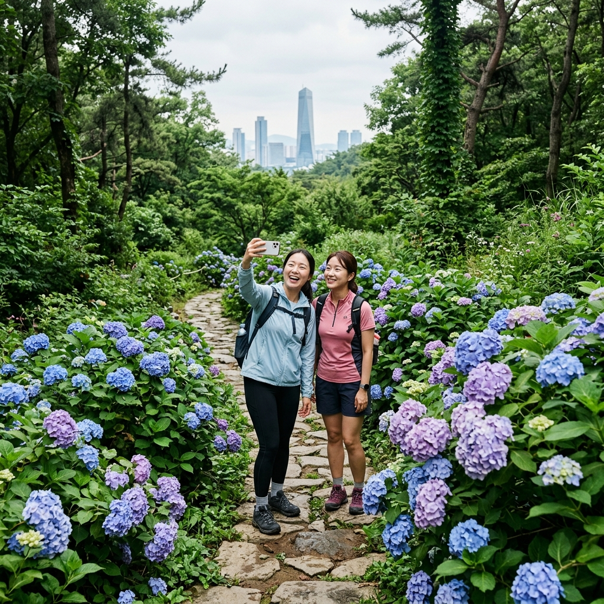
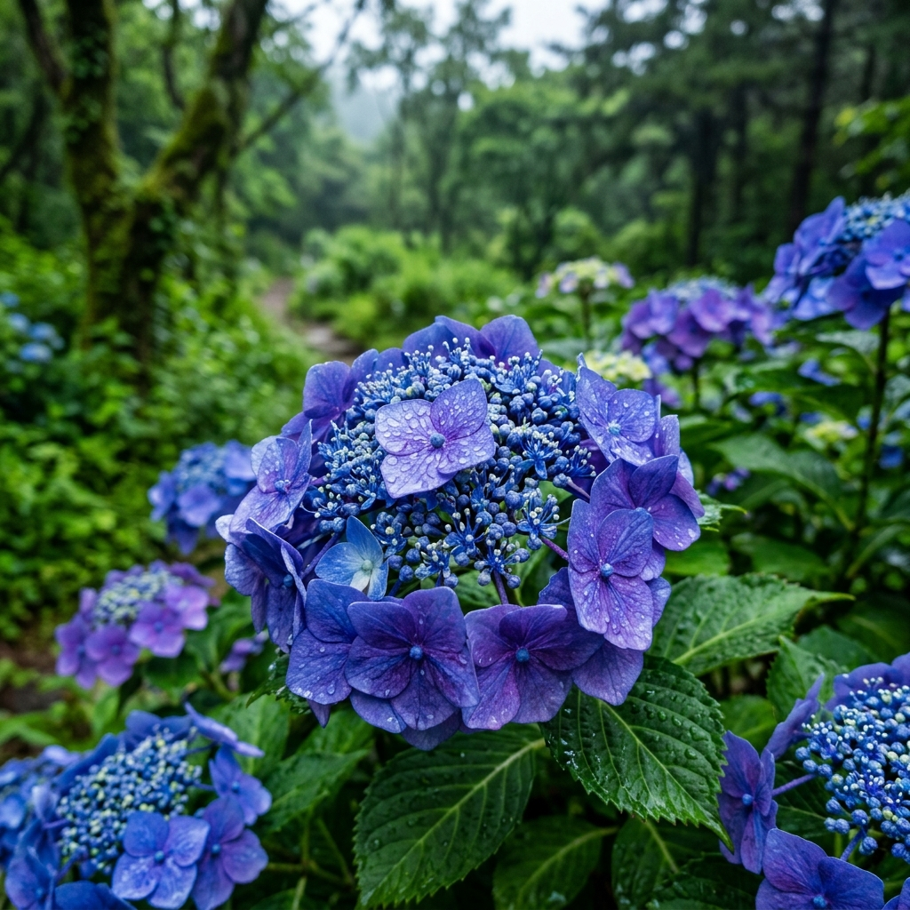
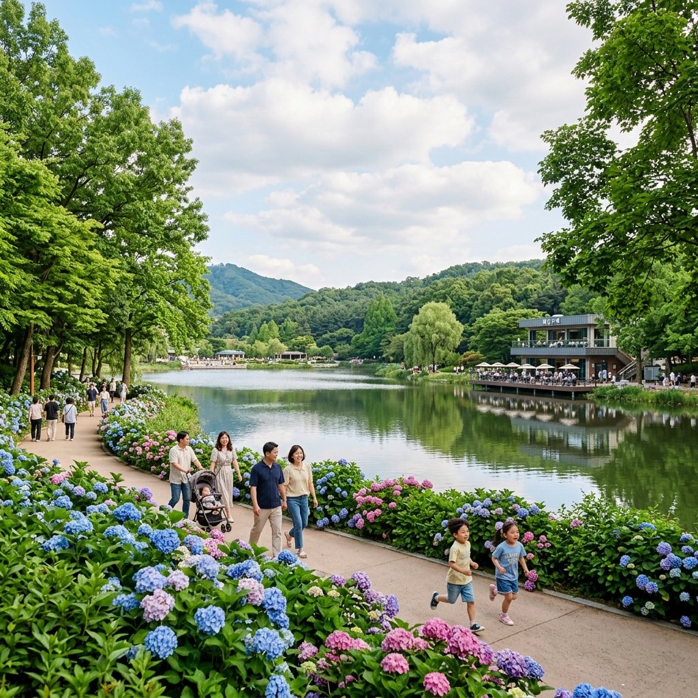

인천 청량산 수국 산책로 2026 — 송도 옆 도심 속 수국 명소, 인천대공원 연계 가족 코스
인천광역시 연수구와 남동구 경계에 솟아 있는 청량산(해발 172m)은 수도권 어디서든 1시간 이내에 접근 가능한 가까운 도심형 산입니다. 송도국제도시 바로 옆에 위치해 편의 접근성이 탁월하며, 6월 중순부터 7월까지 산 곳곳에 피어나는 수국(Hydrangea macrophylla)은 '도심 속 수국 여행지'로 입소문이 퍼지며 인천 주민들의 여름 단골 나들이 코스가 되었습니다. 인천대공원과 연계하면 반나절~하루 알찬 코스를 완성할 수 있습니다.
🏔️ 청량산 소개 — 송도와 남동을 잇는 도심 녹지 보물
청량산은 인천광역시 연수구 청학동과 남동구 장수동에 걸쳐 있는 해발 172m의 야트막한 산입니다. 행정 구역상 연수구와 남동구 두 곳에 동시에 속하는 산으로, 인천 도심 한가운데 자리하면서도 등산로와 산책로가 잘 정비되어 사계절 인천 시민들의 사랑을 받아 왔습니다.
산의 이름에서 짐작할 수 있듯, 청량산은 맑고 서늘한 공기로 유명합니다. 정상부 근처에서 만나는 시원한 바람과 도심 고층 빌딩숲 너머로 펼쳐지는 서해 조망은 도보로 1시간 이내에 즐길 수 있는 인천의 숨은 명소로 꼽힙니다. 특히 연수구 쪽 들머리에서는 송도 센트럴파크와 인천경제자유구역 스카이라인이 한눈에 내려다보여 도시와 자연을 동시에 담을 수 있는 특별한 장소입니다.
청량산이 최근 주목받는 이유는 6월부터 피어나는 수국 군락 덕분입니다. 산 능선과 등산로 주변에 자생하는 산수국과 재식된 수국들이 파란색·보라색·흰색의 꽃구름을 만들어내며, 이를 담으려는 사진 애호가들과 산책 인파가 6월부터 크게 늘어납니다. 아직 전국적으로 알려지지 않아 비교적 한적하게 즐길 수 있다는 점도 이 명소의 큰 매력입니다.

청량산 수국 산책로와 송도 스카이라인의 대비 / AI 제작 이미지
🌸 2026년 수국 개화 시기 및 상태 가이드
수국의 개화는 지역 기온과 강우량에 따라 매년 조금씩 달라지지만, 인천 청량산 기준으로는 대체로 6월 10일 전후에 꽃망울이 벌어지기 시작하고, 6월 20일~7월 5일이 만개 피크입니다. 2026년은 5월 강수량이 평년보다 높았다는 기상청 전망에 따라 개화가 다소 앞당겨질 가능성도 있습니다.
수국은 토양 산도(pH)에 따라 꽃 색깔이 달라지는 흥미로운 특성을 지닙니다. 산성 토양에서는 알루미늄 이온 흡수가 활발해져 푸른색과 보라색 계열로, 알칼리성 토양에서는 분홍색·붉은색 계열로 발색됩니다. 청량산의 화강암 기반 산성 토양 덕분에 이곳 수국은 특히 짙고 선명한 블루-바이올렛 톤이 강하게 표현됩니다.
방문 전 최신 개화 상황은 인천시 공식 인스타그램(@incheon.official) 또는 인천관광공사 SNS 채널에서 실시간 현황을 확인하는 것을 권장합니다. 비가 온 직후에는 빗물을 머금은 수국 꽃봉오리가 더욱 선명하게 발색되어 사진 찍기에 최적의 조건이 만들어집니다.
🗺️ 청량산 수국 산책 코스 — 루트별 안내
| 출발지 | 거리/시간 | 특징 |
|---|
| 연수구 청학동 들머리 | 왕복 약 3.5km / 1시간 30분 | 수국 군락 밀집 구간, 비교적 완만한 경사 |
| 남동구 장수동 들머리 | 왕복 약 4.0km / 2시간 | 능선 조망 구간 포함, 적당한 체력 소모 |
| 인천대공원 연계 코스 | 편도 약 5.0km / 2시간 30분 | 청량산 → 인천대공원 하산, 인천대공원에서 귀가 |
청학동 들머리 코스는 가장 접근하기 쉬운 루트입니다. 주거지 바로 옆에서 시작해 수국 군락이 집중된 등산로 초입~중간 구간을 지나 능선까지 오르는 코스로, 전체적으로 경사가 완만해 어린 자녀나 초보 등산객도 무리 없이 즐길 수 있습니다.
남동구 장수동 들머리 코스는 인천대공원과 가까워 대중교통 이용객에게 유리합니다. 지하철 수인분당선 인천대공원역(12번 출구)에서 도보로 이동 가능하며, 산림 내부 깊숙이 들어갈수록 사람이 드물어져 고요한 수국 산책을 즐기기에 적합합니다.
인천대공원 연계 코스는 청량산을 넘어 인천대공원으로 하산하는 원방향 종주 코스입니다. 산을 내려오면 바로 인천대공원의 넓은 잔디밭과 호수 주변 산책로가 펼쳐지며, 공원 내 카페에서 여유를 즐기다 지하철로 귀가하는 반나절 코스로 완성됩니다. 단, 이 경우 출발지와 도착지가 다르므로 자가용보다는 대중교통을 이용하는 편이 편리합니다.
🏙️ 도심 가까이에서 즐기는 자연 — 청량산의 생태 환경
해발 172m라는 낮은 고도에도 불구하고 청량산은 생각보다 풍성한 자연 생태를 간직하고 있습니다. 산 전체가 인천광역시 보전녹지로 지정되어 무분별한 개발로부터 보호받고 있으며, 참나무·신갈나무·산벚나무 등의 활엽수와 소나무가 혼효림(混淆林)을 형성하고 있습니다.
6월은 산 전체가 생기로 가득한 계절입니다. 참나무 새 잎이 연한 황록색에서 진한 초록으로 변해가는 과정과, 곳곳에 피어난 수국의 보랏빛이 어우러지는 장면은 그야말로 '녹색과 보라의 하모니'를 이룹니다. 산 정상 근처에서는 멀리 인천항과 영종도, 날씨가 맑은 날에는 강화도까지 보이는 탁 트인 조망을 즐길 수 있습니다.
숲 안에서는 참새·박새·직박구리 등 도시 근교형 산림 조류들이 활발하게 활동하며, 청설모와 족제비가 출몰한다는 목격담도 많습니다. 봄·여름철에는 등산로 주변으로 다양한 야생화가 릴레이식으로 피어나 식물 애호가들의 관심을 끌고 있습니다.

청량산 산성 토양이 만든 짙은 블루 수국 / AI 제작 이미지
🌳 인천대공원 연계 코스 — 반나절 완성 플랜
청량산 산행 후 인천대공원으로 이어지는 연계 코스는 인천에서 손꼽히는 힐링 루트입니다. 인천대공원은 부지 면적 약 710ha의 국내 대규모 도시 공원으로, 수목원·캠핑장·자전거 도로·로즈가든·어린이 놀이시설 등이 집약된 복합 자연 공간입니다.
청량산에서 인천대공원 방면으로 하산하면 공원 북쪽 출입구(인천대공원 로즈가든 방면)와 이어집니다. 6월 중순의 인천대공원은 장미 축제 마무리 시즌과 맞물려 아직 잔향이 남아 있는 장미밭이 청량산 수국 여운을 이어가기에 더없이 좋은 배경이 됩니다.
공원 내 넓은 잔디광장에서 돗자리를 깔고 쉬거나, 자전거 대여소에서 자전거를 빌려 공원 내부를 자유롭게 둘러보는 것도 추천합니다. 공원 중심에 자리한 인공 저수지(인천대공원 호수) 주변에는 카페와 간이 식당들이 들어서 있어 간단한 식사와 음료를 즐기기 좋습니다. 귀가 시에는 수인분당선 인천대공원역을 이용하면 서울 방면으로 환승이 편리합니다.
🚇 대중교통 접근법 — 수도권 어디서든 1시간 이내
| 교통 수단 | 경로 | 소요 시간 |
|---|
| 지하철 | 서울 사당역 → 수인분당선 환승 → 인천대공원역 하차 (도보 10분) | 약 50분 |
| 지하철 | 인천 1호선 원인재역 → 도보 20분 (청학동 들머리) | 서울 출발 기준 약 55분 |
| 자가용 | 서울 → 제2경인고속도로 → 학익IC 또는 문학IC 이용 | 약 40~50분 (주말 정체 감안) |
| 주차 | 청량산 인근 인천대공원 주차장 이용 가능 (유료) | — |
지하철을 이용하는 경우 수인분당선이 가장 편리합니다. 인천대공원역 1번·12번 출구에서 나오면 공원 입구가 바로 연결되며, 청량산 방면은 약 10~15분 도보로 접근 가능합니다. 주말에는 자가용보다 대중교통 이용이 훨씬 수월하며, 특히 수국 절정 기간(6월 하순~7월 초)에는 주차 공간 부족으로 대기 시간이 길어질 수 있으니 참고하시기 바랍니다.
📸 청량산 수국 사진 촬영 팁
청량산 수국을 가장 아름답게 담으려면 몇 가지 촬영 노하우를 알아두면 큰 도움이 됩니다.
① 흐린 날이 수국 사진에 최적 — 맑은 날 직사광선은 수국 꽃잎의 파란색을 희게 날릴 수 있습니다. 반면 엷은 구름이 낀 흐린 날에는 빛이 고르게 확산되어 짙고 선명한 블루-바이올렛 색상이 잘 살아납니다.
② 비 온 직후가 골든 타임 — 수국 꽃잎에 빗물이 맺힌 직후 30분~1시간이 발색이 가장 풍부한 시간대입니다. 이른 아침 이슬이 맺힌 상태도 비슷한 효과를 냅니다.
③ 광각 렌즈로 군락 전체를 담기 — 수국 군락이 넓게 펼쳐진 구간에서는 광각(16~24mm) 렌즈를 사용해 인물과 배경을 함께 담으면 압도적인 공간감이 연출됩니다.
④ 도심 배경 역대비 샷 — 능선 부근에서 수국 꽃 너머로 송도 스카이라인을 배경에 넣는 구도는 청량산 만의 독특한 '도시+자연' 컨셉 사진을 완성시킵니다. 망원 압축 효과(70~200mm)를 활용하면 배경 빌딩이 더 가깝게 느껴지는 구도가 나옵니다.
🍜 청량산 주변 맛집 & 쉼터 추천
청량산과 인천대공원 인근에는 다양한 먹거리 선택지가 있습니다.
인천대공원 내 카페 거리는 공원 호수 주변에 조성된 여러 카페들이 야외 테라스를 운영하고 있어, 산행 후 시원한 음료와 함께 공원 풍경을 즐기기에 좋습니다. 여름철 대표 메뉴인 팥빙수·망고빙수를 전문으로 하는 디저트 카페들이 특히 인기입니다.
연수구 청학동 쪽으로 하산하면 지역 주민들이 즐겨 찾는 작은 식당가가 형성되어 있습니다. 이 일대는 냉면·콩국수 등 여름 별미 음식점들이 모여 있어 산행 후 시원한 여름 음식으로 마무리하기에 제격입니다.
코스 후반부를 인천대공원으로 잡았다면, 공원 입구 인근 상업지구에서 인천의 명물인 중국성 짜장면 또는 차이나타운 방향 연계 투어를 추가하는 것도 인천 여행의 즐거움을 극대화하는 방법입니다.

인천대공원 호수 주변 수국 산책로 / AI 제작 이미지
🗓️ 청량산 수국 여행 추천 일정표
08:30 — 인천대공원역 도착, 청량산 청학동 들머리 방면 이동 (도보 15분)
09:00 — 청량산 수국 산책로 진입, 군락 감상 및 사진 촬영 (1시간 30분)
10:30 — 정상 도달, 송도 스카이라인 조망 및 휴식 (30분)
11:00 — 인천대공원 방향 하산 (1시간 내외)
12:00 — 인천대공원 내 카페에서 점심 또는 디저트 타임
13:30 — 인천대공원 자전거 대여 또는 장미 정원 산책 (1시간)
14:30 — 인천대공원역 귀가 또는 차이나타운 연계 투어
📌 방문 전 필수 확인 사항
✅ 청량산 수국 방문 체크리스트
✔ 등산화 또는 트레킹화 착용 (일부 급경사 구간 미끄럼 주의)
✔ 물 500ml 이상 지참 (정상까지 판매 시설 없음)
✔ 6월 중순~7월 초가 수국 만개 최적 시기
✔ 비 온 직후 방문 시 꽃색이 가장 선명
✔ 흐린 날 사진 촬영에 최적 (과노출 방지)
✔ 인천대공원 연계 시 대중교통(수인분당선) 이용 권장
✔ 방문 전 인천시 공식 SNS에서 개화 현황 확인
#인천청량산
#인천수국명소
#청량산수국
#인천대공원
#수국개화2026
#도심속수국
#인천여행
#수도권수국
#연수구등산
#인천가볼만한곳